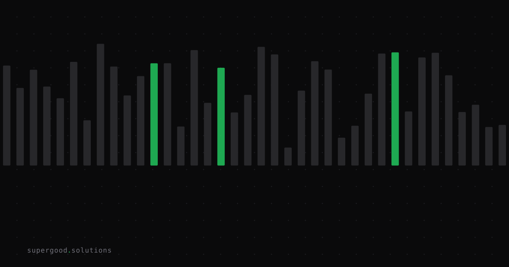

Model Routing Sounds Simple Until Production Proves Otherwise
TL;DR: Routing requests to the cheapest capable model sounds like solved engineering — classify, branch, save money. In production, the edge cases live in query ambiguity and cascade drift, not benchmark scores, and the regressions are silent.
Key Insight
Every model routing deck shows the same diagram: small model on the left, frontier model on the right, a classifier in the middle routing easy traffic cheap and hard traffic expensive. The savings look great on slide five. Then you ship it.
The problem is that the classifier is making a judgment call on query intent, and intent is ambiguous by nature. "What's our refund policy?" is a simple lookup — until it's from an enterprise customer mid-churn and needs nuance that a cheap model will flatten into boilerplate. The model didn't change. The stakes changed. Your router doesn't know the difference.
Benchmark-based routing can't score a query's difficulty without knowing its context, and context isn't in the token count.
Why Teams Miss This
Three failure modes keep coming up:
1. Routing on complexity proxies instead of task fit. Teams classify by token length, keyword match, or embedding distance. These are cheap signals but they measure surface features, not what actually requires reasoning. A two-sentence legal question is not "simple."
2. Cascade drift. Model cascades — send cheap first, escalate on failure — are genuinely effective when tuned. They break quietly when the escalation trigger drifts. A provider-side output formatting change can silently flip a schema validator, escalating 90% of traffic to your frontier model with no alert fired and no error log. You discover it on the bill. TrueFoundry documented exactly this pattern: one engineer cut the LLM bill 41%, then watched it triple the following week because a cheap model's output format changed and the verifier started failing on nearly every response.
3. Confusing routing with failover. They share machinery (a candidate list and a dispatch policy) but the goals are different. Cost-optimized routing and availability fallback need separate logic. Teams that bolt them together end up with routers that silently send traffic to cheaper models during an outage-adjacent degradation, when they actually need the opposite.
How to Actually Do It
The version that survives production has a few non-negotiable pieces:
Tag at the call site, not at the router. If your application code knows it's doing a structured extraction vs. open-ended generation, pass that as metadata. Don't ask a classifier to infer what your code already knows.
response = llm_client.complete(
prompt=user_query,
routing_hint="structured_extraction", # explicit, not inferred
max_cost_tier="mid"
)Instrument the escalation rate as a first-class metric. In a model cascade, the percentage of requests that escalate to a higher tier is your canary. If it moves more than a few points without a traffic explanation, something upstream changed. Alert on it.
# Emit this on every cascade decision
metrics.increment("llm.routing.escalated", tags={
"from_model": cheap_model,
"to_model": frontier_model,
"reason": escalation_reason
})Build a quality signal, not just a cost signal. Routing on vibes is how a regression ships unnoticed. You need at minimum: an offline eval set for the query types your router classifies, and a lightweight online judge (another model or a structured output validator) that samples live traffic and flags drift. Without this, you're flying blind on whether the cheap model is actually good enough for the traffic it's getting.
Treat semantic routing as a last resort. Embedding the request and routing by inferred intent adds latency, another model hop, and another failure point. Use it only when the caller genuinely can't provide routing metadata, which is rarer than it sounds.
What We've Learned
Start with the dumbest router that works: explicit task tags from your application code, two or three model tiers, and escalation rate as an alerting metric. That system is debuggable. Graduate to semantic routing only when you've exhausted explicit signals and you can prove on your own eval set that it buys you something.
The teams that get this right treat the router as a piece of infrastructure with its own observability budget, not as a one-time cost optimization they set and forget. Set-and-forget routing is fine until a provider updates their output format on a Tuesday.
Sources
- Intelligent LLM Routing: Cost & Quality-Aware Selection — TrueFoundry
- LLM Model Routing in 2026: Cost-Quality Optimization — Digital Applied
- The Complete Guide to Production LLM Systems (2026) — AppScale
- AI Monitoring in Production 2026 — ValueStream AI
Have a specific workflow in mind?
Bring it to a Quick Scan — a live working session where we'll tell you honestly whether it should be an agent, a workflow, or left alone, before you spend a dollar building it. You get 3 prioritized recommendations on the call, a one-page summary after, and the $500 credited toward any engagement within 30 days.
Get new posts + practical agent-ops notes
One email when something new goes up. No nurture sequence, no spam — unsubscribe whenever you want.